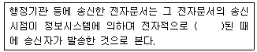
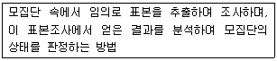
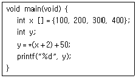
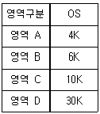
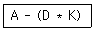

사무자동화산업기사 (2018-04-28 기출문제)
1과목: 사무자동화 시스템
1. 전자우편 시스템에서 같은 내용을 여러 사람에게 보내는 기능은?
- 첨부 기능
- 온라인 기능
- 동보 기능
- 오프라인 기능
(정답률: 91%)

2. 다음 중 멀티미디어 저작도구가 아닌 것은?
- 멀티미디어 툴북
- 솔라리스
- 오소웨어
- 디렉터
(정답률: 67%)
3. 관계형 데이터베이스에서 기본키(Primary Key)가 가져야 할 성질은?
- 공유성
- 중복성
- 식별성
- 연결성
(정답률: 79%)
4. 사무자동화가 조직 구조를 종래의 피라미드형 조직에서 네트워크형 조직으로 변환시키는 이유로 틀린 것은?
- 관리직의 관리범위의 증대
- 관리자의 지휘ㆍ통솔에 대한 역할이 불필요
- 시장변화에 대한 신속하고도 정확한 대응
- 의사소통의 신속화
(정답률: 81%)
5. 그래픽화면에서 커서의 위치를 제어하는 기능을 갖는 입력장치의 형태가 아닌 것은?
- 마우스(Mouse)
- 스캐너(Scanner)
- 트랙볼(Trackball)
- 조이스틱(Joystick)
(정답률: 90%)
6. 그룹웨어(Groupware)에 대한 설명으로 가장 거리가 먼 것은?
- 협동 작업을 지원하기 위해 컴퓨터 기술을 이용하는 시스템의 통칭이다.
- 컴퓨터 지원 협동 작업을 가능하게 하는 하드웨어 및 소프트웨어 시스템이다.
- 클라이언트를 사용자 단말기로 하고 서버를 호스트 컴퓨터로 하는 네트워크 시스템이다.
- 사람간의 프로세스의 생산성과 기능성을 증진하는 컴퓨터로 중재되는 시스템이다.
(정답률: 69%)
7. 스프레드시트(Spreadsheet)패키지의 특성으로 가장 옳지 않은 것은?
- 템플릿(Template)
- 민감도 분석
- 계획과 통제의 도구
- 부프로그램(Sub program)의 관리
(정답률: 70%)
8. 컴퓨터시스템 설치를 위한 건물 설계 시 고려할 사항으로 가장 거리가 먼 것은?
- 컴퓨터시스템 설치를 위한 입지 선정 시 지반이 약한 지역을 피한다.
- 컴퓨터센터의 주요 건물 구조는 내화구조로 하여야 한다.
- 외부 침입 방지, 전산장비의 원활한 이동을 위해 컴퓨터실의 출입구는 많아야 한다.
- 비상구는 건물 내에서 열쇠를 사용하지 않고 열 수 있는 구조로 한다.
(정답률: 87%)
9. 뉴미디어의 분류체계 중 정보전달 매체를 기준으로 분류할 때 해당되지 않는 것은?
- 무선계
- 유선계
- 영상계
- 패키지계
(정답률: 62%)
10. 그래픽 프로그램에서 그림을 그린 후 문서편집기와 연결하면 나중에 그림이 바뀔 경우 문서편집기의 그림도 바뀌는 기능은?
- OLE 기능
- 클립보드 기능
- activeX 기능
- 매크로 기능
(정답률: 73%)
11. 다음 중 어떤 데이터를 기억장치로부터 읽거나 기억시킬 때 소요되는 시간 개념으로 가장 옳은 것은?
- Access Time
- Seek Time
- Search Time
- Read Time
(정답률: 69%)
12. 사무자동화시스템의 주요기능이 아닌 것은?
- 문서화 기능
- 집중처리 기능
- 정보 활용 기능
- 업무의 자동화 기능
(정답률: 55%)
13. 여러 사람이 사용하는 복합 사무실과 같은 공용 업무 환경에서 발생할 수 있는 정보유출에 대한 보안 대책으로 가장 옳지 않은 것은?
- 복합기나 프린터에서 일정시간 이상 방치된 문서는 출력자 확인 후 출력자에게 전달하거나 출력자가 없는 경우는 발견자가 보관한다.
- 복합기나 프린터에 출력된 문서 방치를 금지하고 복사나 출력 후 즉시 수거한다.
- 개인정보 등 중요정보가 포함된 문서는 이면지 사용을 금하며 파쇄기를 이용하여 파기한다.
- 임직원의 이름, 주소록, 전화번호 등 개인정보가 담긴 문서는 비인가자의 눈에 띄는 곳에 부착하여서는 안 되며 용이하게 접근하지 못하도록 해야 한다.
(정답률: 86%)
14. 다음 중 은행창구 업무 및 항공권 예약 업무와 같이 데이터 발생 즉시 처리하는 시스템은?
- 분산자료시스템
- 일괄처리시스템
- 실시간처리시스템
- 오프라인시스템
(정답률: 87%)
15. 데이터베이스 설계 단계 중 개념 스키마 모델링 및 트랜잭션 모델링과 가장 관계되는 것은?
- 논리적 설계
- 물리적 설계
- 트랜잭션 설계
- 개념적 설계
(정답률: 64%)
16. 통신판매중개자가 자신의 정보처리시스템을 통하여 처리한 기록 중 소비자불만에 관한 기록의 보존 기준은?
- 6월
- 1년
- 3년
- 5년
(정답률: 82%)
17. 다음 중 원격지 컴퓨터 서버에 접속하는 방법으로 가장 옳지 않은 것은?
- FTP를 이용하여 원격지의 서버에 접속한다.
- Telnet을 이용하여 원격지의 서버에 접속한다.
- 전자우편 시스템을 이용하여 원격지의 서버에 접속한다.
- rlogin을 사용하여 서버에 접속한다.
(정답률: 74%)
18. 계층형 데이터베이스에 대한 설명으로 가장 옳은 것은?
- 서로 관계있는 레코드들이 그물처럼 얽혀있는 구조로 되어 있다.
- 각 레코드가 트리구조 형식으로 구성된 모형이다.
- 수학적 이론에 기초하여 테이블 형태로 표현된 모형이다.
- 행과 열로 구성된 2차원 구조이다.
(정답률: 70%)
19. 클립보드(clipboard)에 대한 설명으로 옳지 않은 것은?
- 컴퓨터에서 임시 저장 공간으로 사용하기 위해 확보된 메모리 영역이다.
- 어떤 프로그램의 데이터를 다른 곳에 복사하는데 사용되기도 한다.
- 일부 응용프로그램에서는 잘라내기, 복사, 붙여넣기 등을 하기 위해 사용된다.
- 특정 데이터를 잘라내기(Cut)한 뒤 다른 곳에 붙여넣기(Paste)를 하지 않거나 파일(File)로 저장하지 않은 채 컴퓨터를 종료해도 잘라내기(Cut) 한 데이터를 복구할 수 있다.
(정답률: 88%)
20. 데이터웨어하우징에서 수집되고 분석된 자료를 사용자에게 제공하기 위해 분류 및 가공되는 요소기술은?
- 데이터 추출
- 데이터 저장
- 데이터 마이닝
- 데이터 액세스
(정답률: 78%)
2과목: 사무경영관리 개론
21. 거래 상대방간에 상호 합의된 메시지를 컴퓨터를 이용하여 상호 교환함으로써 거래업무에 따른 문서처리 업무를 자동화하는 것은?
- EDP
- MIS
- EDI
- MIPS
(정답률: 77%)
22. EDI의 직접적 구성요소와 가장 거리가 먼 것은?
- EDI표준
- 사용자 시스템
- 통합 데이터베이스
- EDI네트워크
(정답률: 63%)
23. 실제의 실험이 불가능하거나 시간적, 경제적 어려움이 많은 경우 또는 해석적인 방법으로 해답을 구할 수 없는 경우에 대한 가상 모의실험을 의미하는 것은?
- Conversion
- Simulation
- Preparation
- Debugging
(정답률: 89%)
24. 사무관리에 있어서 표준화의 목적과 가장 거리가 먼 것은?
- 사무관리 활동이 편리하다.
- 사무에 대한 효과적인 통제를 할 수 있다.
- 사무종사자의 권한을 강화시킨다.
- 사무 업무의 용어나 개념상의 통일을 기할 수 있다.
(정답률: 86%)
25. 사무실 배치(office layout)를 할 때 고려해야 할 사항으로 가장 타당하지 않은 것은?
- 사무처리나 업무의 흐름이 원활히 유통되도록 한다.
- 건물의 공간을 잘 활용하도록 한다.
- 고객보다는 근무자 입장에서 가장 우선적으로 배치하여야 한다.
- 부서 확대 등 미래를 예측하여 융통성 있는 배치를 한다.
(정답률: 85%)
26. 문서 처리의 원칙으로 볼 수 없는 것은?
- 즉일처리의 원칙
- 책임처리의 원칙
- 폐쇄처리의 원칙
- 법령적합의 원칙
(정답률: 70%)
27. 카드, 도면, 대장 등과 같이 주로 사람, 물품 또는 권리관계 등에 관한 사항의 관리나 확인 등에 수시로 사용되는 기록물은?
- 비치기록물
- 전자기록물
- 서류기록물
- 관용기록물
(정답률: 83%)
28. 행정기관의 장으로부터 사무의 내용에 따라 결재권을 위임받은 자가 행하는 결재는?
- 선결
- 전결
- 후결
- 간인
(정답률: 89%)
29. 다음 괄호 안 내용으로 가장 적합한 것은?

- 입력
- 전송
- 기록
- 발송
(정답률: 72%)
30. 빌딩, 공장, 대학 캠퍼스 등과 같이 한정된 영역을 대상으로 설치되는 통신망으로써 구내통신망이라고도 불리는 네트워크 유형으로 가장 옳은 것은?
- LAN(Local Area Network)
- VAN(Value Added Network)
- WAN(Wide Area Network)
- ISDN(Integrated Service Digital Network)
(정답률: 85%)
31. 다음 동작 사례 중 가장 비효율적인 Therblig에 해당하는 것은?
- 스패너에 손을 얹는다.
- 스패너를 잡는다.
- 스패너를 볼트 있는 곳으로 가지고 간다.
- 몇 개 중에서 1개의 스패너를 고른다.
(정답률: 74%)
32. 현대 과학적 사무관리가 추구하는 3S에 해당하지 않는 것은?
- 표준화(Standardization)
- 신속화(Speedization)
- 간소화(Simplification)
- 전문화(Specialization)
(정답률: 72%)
33. 다음 중 사무관리의 시스템적 접근방법으로 가장 타당하지 않은 것은?
- 관리정보시스템
- 사이버네틱스 사고방법
- 사무시스템, 기계시스템, 자료처리시스템, 통신기구 등을 포함
- 사무 실체의 작업적 방법
(정답률: 62%)
34. 듀이십진분류표(DDC)에 의한 분류 기호 100에 해당하는 것은?
- 철학
- 자연과학
- 기술과학
- 역사
(정답률: 81%)
35. 다음 중 사무계획화를 가장 옳게 설명한 것은?
- 사무계획화는 기업의 모든 계층에 필요한 것은 아니고 특정한 계층인 경영진에서만 필요로 한 것이다.
- 사무계획화는 기업경영에 필요한 사무관리 목표를 정한 후, 그것을 효과적으로 수행할 수 있도록 하고자 함이다.
- 사무계획화의 기본 내용은 사무인력을 예측하여 미리 예산을 확정하고자 하는 것이다.
- 사무계획화의 기본 내용은 정보만을 지속적으로 가공하여 생산하는 것이다.
(정답률: 81%)
36. 행정기관에서 공무상 작성하거나 시행하는 문서와 행정기관이 접수한 모든 문서를 지칭하는 것으로 가장 옳은 것은?
- 사문서
- 등기부
- 공문서
- 기록부
(정답률: 91%)
37. 사무통제를 위한 관리기술 중 사무표준을 사용하여 매일 발생하는 사무를 능률적으로 처리하는 것을 목적으로 하는 관리 활동으로 가장 옳은 것은?
- 사무 외주관리
- 사무 보증관리
- 사무 공정관리
- 사무 기획관리
(정답률: 82%)
38. 정보보안의 3요소에 가장 해당하지 않는 것은?
- 무결성
- 기밀성
- 책임성
- 가용성
(정답률: 77%)
39. EDI의 표준을 크게 나누고자 할 때 가장 적합한 방식은?
- 수치코드표준, 통신표준
- 양식표준, 통신표준
- 수치코드표준, 문자코드표준
- 문서표준, 수치코드표준
(정답률: 68%)
40. 다음은 사무량 측정 방법 중 어떤 것을 설명한 것인가?

- 관측법
- WS(Work Sampling)법
- CMU(Clerical Minuter per Unit)법
- PTS(Predetermined Time Standard)법
(정답률: 81%)
3과목: 프로그래밍 일반
41. 작성된 표현식이 주어진 BNF에 의해 바르게 작성되었는지를 확인하기 위해 만들어진 트리는?
- root tree
- binary normal tree
- parse tree
- level tree
(정답률: 84%)
42. 시간 구역성(Temporal Locality)의 예가 아닌 것은?
- 반복
- 부프로그램
- 순차적 코드의 실행
- 스택
(정답률: 51%)
43. 운영체제의 주기억장치 관리 기법 중 배치전략에 해당되지 않는 것은?
- 최초 적합(First-Fit)
- 최후 적합(Last-Fit)
- 최적 적합(Best-Fit)
- 최악 적합(Worst-Fit)
(정답률: 81%)
44. 어휘 분석은 원시 프로그램을 하나의 긴 스트링으로 보고 원시 프로그램을 문자 단위로 스캐닝 하여 문법적으로 의미 있는 일련의 문자들로 분할해 낸다. 이때 분할된 문법적인 단위는?
- PATTERN
- TREE
- TOKEN
- PARSE
(정답률: 87%)
45. 다음 C언어 코드의 결과 값은?

- 150
- 250
- 350
- 450
(정답률: 55%)
46. 프로그램 실행 시 사용되는 데이터 속성을 언어 번역기에 알려 주기 위한 문장은?
- 배정문
- 반복문
- 조건문
- 선언문
(정답률: 71%)
47. 객체지향 개념에서 이미 정의되어 있는 상위클래스(슈퍼 클래스 혹은 부모 클래스)의 메소드를 비롯한 모든 속성을 하위 클래스가 물려받는 것을 무엇이라 하는가?
- 메시지
- 메소드
- 가상화
- 상속
(정답률: 87%)
48. EBNF에서 선택적 구조를 표현하는 기호는?
- ::＜＞
- []
- { }
- ＜＞
(정답률: 75%)
49. 주기억장치 관리기법 중 최악 적합 기법을 사용할 때, 5K의 프로그램이 할당되는 영역은? (단, 영역 A, B, C, D는 모두 비어 있다고 가정한다.)

- 영역 A
- 영역 B
- 영역 C
- 영역 D
(정답률: 82%)
50. C언어에서 반복처리를 위한 명령문이 아닌 것은?
- for
- while
- continue
- do ~ while
(정답률: 74%)
51. 특수 형태의 토큰에 해당되지 않는 것은?
- 지정어
- 연산자
- 상수
- 구분자
(정답률: 63%)
52. 큐에 있는 프로세스 중 실행 시간이 가장 짧은 프로세스에게 먼저 CPU를 할당하는 스케줄링 기법은?
- HRN
- FCFS
- SJF
- ROUND ROBIN
(정답률: 65%)
53. 묵시적 순서 제어에 해당하는 것은?
- 일반 언어에서 문장 나열 순서대로 제어한다.
- 해당 언어에서 각 문장이나 연산의 순서를 프로그래머가 직접 변경한다.
- 반복문을 사용해서 문장의 실행 순서를 변경한다.
- 수식의 괄호를 사용해서 연산의 순서를 변경한다.
(정답률: 63%)
54. 객체지향 언어에서 공통된 속성과 행위를 갖는 객체들의 집합을 의미하는 것은?
- 멀티쓰레딩
- 클래스
- 메소드
- 캡슐화
(정답률: 78%)
55. 매개변수 전달 방법 중 실매개 변수 주소를 대응되는 형식매개 변수에 전달하는 방식은?
- 주소에 의한 전달(call by reference)
- 값에 의한 전달(call by value)
- 이름에 의한 전달(call by name)
- 매개변수에 의한 전달(call by parameter)
(정답률: 63%)
56. 교착상태의 발생 조건이 아닌 것은?
- 상호 배제
- 환형 대기
- 선점
- 점유와 대기
(정답률: 69%)
57. C언어에서 사용하는 이스케이프 시퀀스에 대한 의미가 옳지 않은 것은?
- ＼n: new page
- ＼r: carriage return
- ＼b: backspace
- ＼t: tab
(정답률: 81%)
58. 원시 프로그램을 컴파일러가 수행되고 있는 컴퓨터의 기계어로 번역하는 것이 아니라, 다른 기종에 맞는 기계어로 번역하는 것은?
- Interpreter
- Linker
- Cross Compiler
- Preprocessor
(정답률: 86%)
59. 객체에서 삭제되거나 할당 해제되어 의미 없는 참조를 가리키는 것은?
- 쓰레기 수집
- 힙 오버플로우
- 스택
- 허상 포인터
(정답률: 61%)
60. 다음 중위식을 후위식으로 옳게 표현한 것은?

- - D A * K
- A D K * -
- A ? D * K
- A * D ? K
(정답률: 84%)
4과목: 정보통신 개론
61. LAN(Local Area Network)에서 CSMA/CD 방식에 대한 설명 중 틀린 것은?
- IEEE 802.3의 표준규약이다.
- 버스형에 일반적으로 이용된다.
- 트래픽양이 증가할수록 채널 이용 효율이 상승한다.
- 다중충돌접근기법이라고 한다.
(정답률: 68%)
62. 물리적 하드웨어 주소인 이더넷 주소를 IP 주소로 변환하는 프로토콜은?
- ARP
- RARP
- HDLC
- PPP
(정답률: 60%)
63. 주파수분할다중화(FDM) 방식에서 보호대역이 필요한 이유는?
- 신호의 세기를 크게 하기 위하여
- 주파수 대역폭을 넓히기 위하여
- 채널의 신호를 혼합하기 위하여
- 채널간의 간섭을 막기 위하여
(정답률: 83%)
64. TCP 프로토콜의 기능으로 틀린 것은?
- 어플리케이션 제어
- 연결 수립, 종료
- 데이터 전송
- 흐름 제어
(정답률: 57%)
65. HDLC 프레임의 헤더에서 프레임을 송ㆍ수신하는 스테이션을 구별하기 위해 사용되는 스테이션 식별자 필드는?
- 주소 필드
- 프레임 검사 순서
- 정보 필드
- 플래그
(정답률: 59%)
66. 4[kHz]의 음성신호를 재생시키기 위한 표본화 주파수의 주기는?
- 125[㎲]
- 165[㎲]
- 200[㎲]
- 250[㎲]
(정답률: 47%)
67. 반송파의 위상과 진폭을 동시에 변조하는 방식은?
- ASK
- PSK
- FSK
- QAM
(정답률: 80%)
68. 데이터 프레임을 연속적으로 전송 중 NAK를 수신하면 오류가 발생한 프레임 이후에 전송된 모든 데이터 프레임을 재전송하는 오류제어 방식은?
- Go-back-N ARQ
- Selective-Repeat ARQ
- Stop-and-Wait ARQ
- Forward Error Connection
(정답률: 75%)
69. 통신 속도가 50[Baud]일 때 최단부호펄스의 시간[sec]은?
- 2
- 1
- 0.5
- 0.02
(정답률: 77%)
70. 4진 PSK 변조 방식에서 변조속도가 4800[Baud] 일 때 데이터의 전송속도[bps]는?
- 2400
- 4800
- 9600
- 12800
(정답률: 70%)
71. HDLC 프레임 중 링크의 설정과 해제, 오류 회복을 위해 주로 사용되는 것은?
- 정보 프레임(Information Frame)
- 무번호 프레임(Unnumbered Frame)
- 감독 프레임(Supervisory Frame)
- 복구 프레임(Recovery Frame)
(정답률: 51%)
72. 아날로그 신호를 디지털 신호로 변환하는 PCM 부호화 단계로 옳은 것은?
- 양자화 → 부호화 → 표본화
- 표본화 → 양자화 → 부호화
- 양자화 → 표본화 → 부호화
- 표본화 → 부호화 → 양자화
(정답률: 85%)
73. HDLC(High-level Data Link Control) 동작모드에 해당하지 않는 것은?
- 정규 응답 모드(NRM)
- 비동기 응답 모드(ARM)
- 비동기 균형 모드(ABM)
- 동기 균형 모드(SBM)
(정답률: 61%)
74. LAN의 네트워크 형태(Topology)에 따른 분류에 속하지 않는 것은?
- 스타형
- 버스형
- 링형
- 교환형
(정답률: 84%)
75. OSI 7계층에서 암호화, 코드변환, 텍스트 압축 등을 수행하는 계층은?
- 응용 계층
- 표현 계층
- 물리 계층
- 데이터링크 계층
(정답률: 55%)
76. 회선교환(Circuit Switching)방식의 특징에 해당하는 것은?
- 고정된 대역폭 전송방식이다.
- 축적 후 전송방식에 해당한다.
- 패킷을 이용한 전송방식이다.
- 전송에 실패한 패킷에 대해서 재전송 요구가 가능하다.
(정답률: 53%)
77. LAN의 한 종류인 100Base-T 네트워크에서 사용되는 전송매체는?
- Coaxial cable
- Optical cable
- UTP cable
- Microwave cable
(정답률: 67%)
78. 나이퀴스트 채널용량 산출 공식(C)으로 옳은 것은? (단, 잡음이 없는 채널로 가정, S/N: 신호대잡음비, M : 진수, B : 대역폭)
- C＝Blog2(S/N)(bps)
- C＝Blog2(M＋1)(bps)
- C＝2Blog2(10＋S/N)(bps)
- C＝2Blog2M(bps)
(정답률: 44%)
79. 통신 프로토콜의 기본 구성요소가 아닌 것은?
- 구문
- 문법
- 의미
- 타이밍
(정답률: 57%)
80. 데이터 링크(data-link) 계층 프로토콜이 아닌 것은?
- HDLC
- BSC
- LAP-B
- FTP
(정답률: 53%)